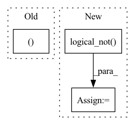

Pattern ID :9612

Before Change
//print(pairs[pred_unpaired==True, 0], score_unpaired[pred_unpaired==True])
//print(pairs[pred_unpaired==False, 1].shape, score_unpaired[pred_unpaired==False].shape)
loss = torch.sum(pairs[pred_unpaired==True, 0] * score_unpaired[pred_unpaired==True])
loss += torch.sum(pairs[pred_unpaired==False, 1] * score_paired[pred_unpaired==False])
//print(score_paired[1:, 1:])
//score_paired = score_paired[1:, 1:]
After Change
// print(score_unpaired)
score_paired = 1 - score_unpaired
//print(pred_bp)
pairs_not_nan = torch.logical_not(torch.isnan(pairs))
loss = torch.sum(pairs[pairs_not_nan[:, 0], 0] * score_unpaired[pairs_not_nan[:, 0]])
loss += torch.sum(pairs[pairs_not_nan[:, 1], 1] * score_paired[pairs_not_nan[:, 1]])
return loss
In pattern: SUPERPATTERN
Frequency: 4
Non-data size: 3
Instances
Fragment ID: 34714560
Project Name: keio-bioinformatics/mxfold2
Commit Name: 307eec16f1b4f6b77b0950411d034a4289fb83b0
Time: 2020-01-06
Author: satoken@bio.keio.ac.jp
File Name: dnnfold/train.py
M Class Name: PiecewiseLoss
N Class Name: PiecewiseLoss
M Method Name: loss_unknown_structure(6)
N Method Name: loss_unknown_structure(6)
M Parent Class: nn.Module
N Parent Class: nn.Module
M File Name: dnnfold/train.py
N File Name: dnnfold/train.py
M Start Line: 126
M End Line: 140
N Start Line: 133
N End Line: 135
'>
Before Change
prev_rejected = not accepted
rk_state = (fnew, tnew, ynew, h)
return rk_state, t1_achieved
class RK23(RKAdaptiveStepSolver):
error_estimator_order = 2
After Change
factor = torch.minimum(torch.full_like(new_factor, self.max_factor), new_factor)
if prev_rejected:
factor = torch.minimum(torch.ones_like(factor), factor)
not_t1_achieved = torch.logical_not(t1_achieved)
h[not_t1_achieved] *= factor[not_t1_achieved]
else:
'>
Fragment ID: 34714563
Project Name: xitorch/xitorch
Commit Name: c6f0785664d60d1310778d43f14a3464660ea4d9
Time: 2021-12-30
Author: firman.kasim@gmail.com
File Name: xitorch/_impls/integrate/ivp/adaptive_rk.py
M Class Name: RKAdaptiveStepSolver
N Class Name: RKAdaptiveStepSolver
M Method Name: _single_step(3)
N Method Name: _single_step(3)
M Parent Class: object
N Parent Class: object
M File Name: xitorch/_impls/integrate/ivp/adaptive_rk.py
N File Name: xitorch/_impls/integrate/ivp/adaptive_rk.py
M Start Line: 85
M End Line: 122
N Start Line: 125
N End Line: 165
'>
Before Change
similarity_matrix = similarity_matrix.view(-1)
label_matrix = label_matrix.view(-1)
return similarity_matrix[label_matrix.eq(1)], similarity_matrix[label_matrix.eq(0)]
class CircleLossBackward(nn.Module):
def __init__(self, m: float, gamma: float) -> None:
After Change
label_matrix = label.unsqueeze(1) == label.unsqueeze(0)
positive_matrix = label_matrix.triu(diagonal=1)
negative_matrix = label_matrix.logical_not().triu(diagonal=1)
similarity_matrix = similarity_matrix.view(-1)
positive_matrix = positive_matrix.view(-1)
negative_matrix = negative_matrix.view(-1)
return similarity_matrix[positive_matrix], similarity_matrix[negative_matrix]
'>
Fragment ID: 34714565
Project Name: tinyzeamays/circleloss
Commit Name: d25dcfcf42c4231b5303a2f67f63dc65e2662ec8
Time: 2020-04-03
Author: 1049793129@qq.com
File Name: circle_loss.py
M Class Name: AnonimousClass
N Class Name: AnonimousClass
M Method Name: convert_label_to_similarity(2)
N Method Name: convert_label_to_similarity(2)
M Parent Class:
N Parent Class:
M File Name: circle_loss.py
N File Name: circle_loss.py
M Start Line: 40
M End Line: 47
N Start Line: 40
N End Line: 48